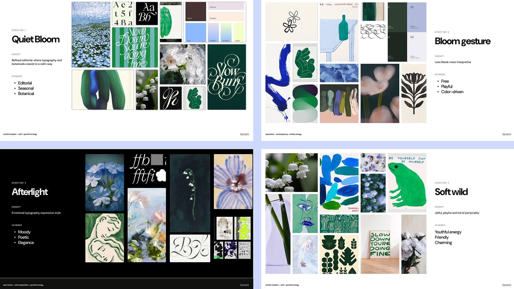
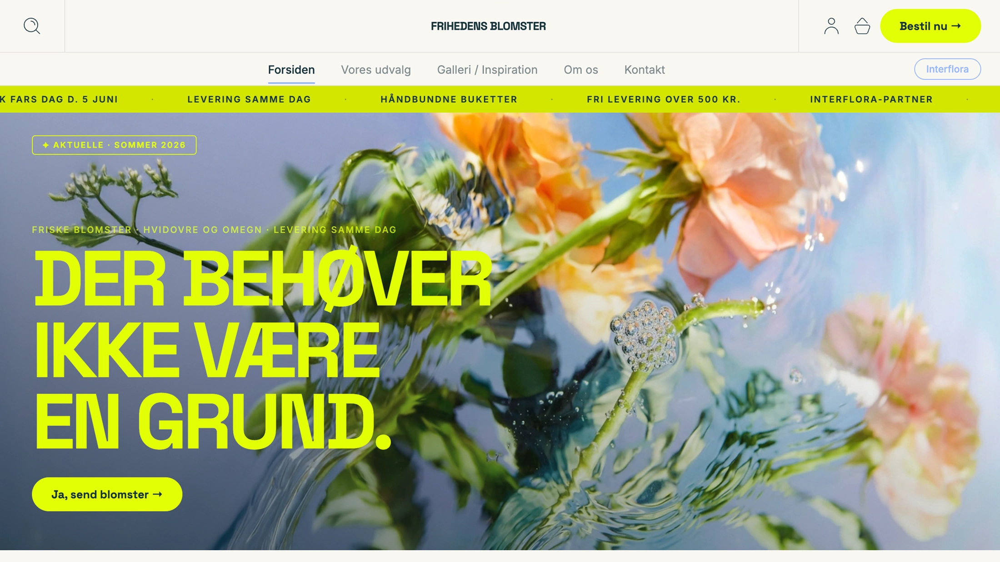

Grundlæggende indhold — Frihedens Blomster — sandkassesite og virksomhedsredesign
"Editorial æstetik, egenproducerede billeder og et redesign, der skulle tale til en yngre målgruppe — Tema 5 var det første tema, der føltes som et rigtigt erhvervsprojekt."
Tema 5 dækkede hele kæden fra præproduktion til færdigt site. Individuelt byggede jeg et sandkassesite for Frihedens Blomster — egenproducerede billeder, Ken Burns-animation og et fuldt kodet responsivt site. I team redesignede vi den samme virksomheds hjemmeside fra bunden: ny identitet, logo, billeder og et kodet site beskyttet med password og skjult for søgemaskiner.
Resultatet fik stærk positiv feedback fra underviserne: visuelt flow, billedvalget og en unik "Instagrammable" dynamik blev fremhævet — men vi blev også udfordret på, om det var en blomsterbutik eller et sportstøjsbrand, vi havde bygget.
To opgaver — ét tema
Temaet var opdelt i to dele. Sandkassesitet var et individuelt opvarmningsprojekt — et sted at eksperimentere med billedproduktion, CSS-animation og visuel stil, uden at bekymre sig om alt det andet. Det var der, Ken Burns-effekten opstod.
Virksomhedssitet var den rigtige opgave: et komplet redesign af Frihedens Blomster rettet mod en yngre målgruppe på 18–35 år, med en fuld designproces fra brief til færdigt site:
- Research: Desk research og concurrent research — konkurrentanalyse og målgruppeforståelse
- Design brief og kravsspecifikation som fundament for teamets beslutninger
- Style tiles — farvepalette, typografi og visuel retning afstemt i teamet
- Figma-mockup over 5 sider: lo-fi wireframes efterfulgt af hi-fi med reelt indhold
- Billedproduktion: AI-genererede fotos via Adobe Firefly, bearbejdet i Photoshop og eksporteret til webP
- Kodning: Responsivt site i HTML og CSS med GitHub til versionsstyring
- Projektledelse: Trello til opgavedeling — størstedelen af taskboards oprettet og vedligeholdt af mig
Fra moodboard til færdigt site
Sandkassesitet var bevidst holdt let — en chance for at teste Adobe Firefly, sætte Ken Burns-effekten op i CSS og finde ud af, hvad der virkede visuelt, inden teamopgaven gik i gang.
- Genererede herobillede og produktfotos i Adobe Firefly med itererede prompts, dokumenteret i FigJam
- Bearbejdede billederne i Photoshop og eksporterede til webP
- Byggede Ken Burns-effekten i ren CSS — zoom fra 1.08× ned til 1× med subtil sidedrift via
@keyframesogcubic-bezier - Animerede headlinens tre linjer med forskudt fade-up via CSS custom properties
I virksomhedssitet løftede jeg en stor del af designprocessen. Jeg stod for research, design brief, style tiles og oprettede det meste af Trello-boardet. Figma-mockuppen dækkede 5 sider i både lo-fi og hi-fi, og jeg åbnede
GitHub-repositoriet og satte strukturen op for teamet — Daria, Julie, Milla, Sebastian og Mona. Udover procesdelen kodede jeg index.html, 404.html og den tilhørende CSS, designede logoet til Frihedens Blomster
som vi brugte som favicon.

Frihedens Blomster — ny identitet
Det færdige virksomhedssite kombinerer editorial æstetik, moderne branding og høj usability. Feedbacken fremhævede særligt det visuelle flow, brugen af billeder i reel kontekst — som bryllupsbuketten på forsiden — og en favoritfunktion, der lader brugerne "hjerte" og gemme buketter. Det rå, levende udtryk med runde kanter og dynamiske elementer skabte en stærk helhed.
- Ny visuel identitet med designguide — farver, typografi og UI-elementer
- Logo designet til Frihedens Blomster, brugt som favicon på tværs af sitet
- AI-genererede fotos via Adobe Firefly, bearbejdet i Photoshop og optimeret til webP
- Ken Burns-effekt i ren CSS på herobildede — ingen JavaScript, ingen biblioteker
- Kodet
index.html,404.htmlog tilhørende CSS fra bunden - Favoritfunktion i JavaScript — brugerne kan gemme foretrukne buketter
- Passwordbeskyttelse via
login.jsogmeta name="robots" content="noindex"— sitet er afskærmet fra søgemaskiner og kræver kodeord for adgang - Responsivt site deployet via GitHub Pages
Feedbacken var overvejende meget positiv — men ikke ukritisk. Én underviser bemærkede, at den limegrønne farve gav en "alert"-fornemmelse og at sitet mindede mere om Adidas end en blomsterbutik. Det var et værdifuldt perspektiv: vores ønske om at skille os ud havde skubbet identiteten et stykke fra afsenderens kerne.

Læring
Tema 5 var det første tema, der virkelig simulerede et erhvervsprojekt — en reel kunde, et team med fem mennesker og en præsentation foran undervisere, der ikke holdt sig tilbage. Det lærte mig, at godt indhold ikke opstår tilfældigt: det starter i præproduktionen, i de beslutninger man tager, inden man åbner Photoshop eller løfter kameraet.
- Præproduktion er ikke spildt tid — et storyboard for en Ken Burns-animation tvinger én til at tænke over, hvad billedet egentlig skal fortælle
- Adobe Firefly er et legitimt designværktøj, men kræver præcise prompts og bevidst bearbejdning — rå output er sjældent klar til brug
- CSS kan løse mere end man tror — Ken Burns i ren CSS med
@keyframesogcubic-beziervar både lettere og hurtigere end et JavaScript-bibliotek - Visuel identitet kan skyde forbi målgruppen — originalitet og genkendelig afsender er en balance, ikke et valg
- GitHub i team reducerer konflikter markant, men kræver at alle er disciplinerede med commits
Den kritiske feedback — at sitet lignede Adidas mere end en blomsterbutik — var faktisk den mest lærerige del af præsentationen. Det viste mig, at designere kan blive så opslugte af et visuelt udtryk, at de mister kontakten til afsenderens kerneidentitet. Det er ikke en fejl, man laver to gange.